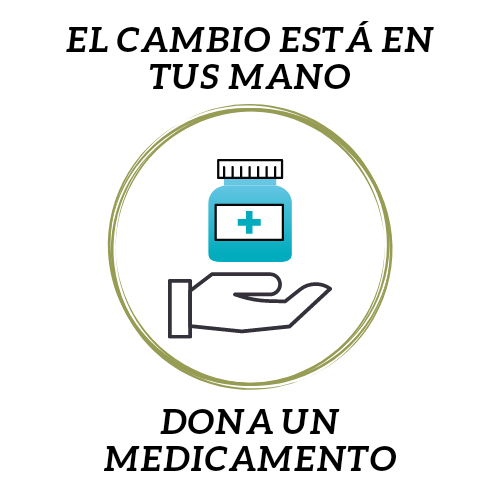

¿Que es la donacion de medicamentos?
Se consideran donacion a los movimientos internacionales, empresas privadas, las personas naturales y/o jurídicas, las organizaciones no gubernamentales, gobiernos, fabricantes y distribuidores de medicamentos y dispositivos médicos, que voluntariamente ofrecen medicamentos y dispositivos médicos con fines humanitarios.
¿Que se necesita para donar medicamentos?
Con el fin de mantener medidasde seguridad es necesario contar con:
¿Como puedo Donar Medicamentos?
La mejor forma de canalizar las donaciones de medicamentos que sean apropiadas y con la garantia de que
lleguen en perfecto estado a su destino, es colaborar con muchas de la ONG que dedican sus esfuerzoa a esta finalidad.
Las hay de muy diversas indoles: algunas colaboran en recoger medicamentos (comprados a tal efecto) o dinero en efentivo a traves de las farmacias,
otras aceptan donativos que destina a la compra de medicamentos o a sufragar localmente medicamentos con los que el personal sanitario este familiarizado.
Algunas trabajan a nivel local y otras internacional.
Te dejo los enlases de algunas de estas organizaciones: